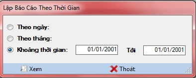

Cách thao tác với Báo cáo doanh thu theo thời gian
Vào Hệ thống ->Báo cáo -> Báo cáo doanh thu -> Theo thời gian

Thanh tiêu đề: Chứa tên của danh mục đang làm việc.
- Chọn kỳ cần xem báo cáo
- Chọn Theo ngày nếu muốn xem báo cáo theo ngày.
- Chọn Theo tháng nếu muốn xem báo cáo theo tháng.
- Chọn Khoảng thời gian , nhập kỳ cần xem báo cáo.
- Chọn Xem trong thanh công cụ bên dưới để thực hiện kết chuyển số dư kho.
- Chọn Thoát để trở lại Danh mục quản lý .